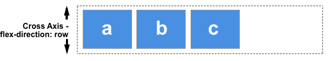

Sitio web como herramienta de aprendizaje del tema
Flex Box y CSS Grid
Conceptos Básicos de flexbox
El Módulo de Caja Flexible, comúnmente llamado flexbox, fue diseñado como un modelo unidimensional de layout, y como un método que pueda ayudar a distribuir el espacio entre los ítems de una interfaz y mejorar las capacidades de alineación. Este artículo hace un repaso de las principales características de flexbox, las que exploraremos con mayor detalle en el resto de estas guías.
Cuando describimos a flexbox como unidimensional destacamos el hecho que flexbox maneja el layout en una sola dimensión a la vez — ya sea como fila o como columna. Esto contrasta con el modelo bidimensional del Grid Layout de CSS, el cual controla columnas y filas a la vez.
Los dos ejes de flexbox
Cuando trabajamos con flexbox necesitamos pensar en términos de dos ejes — el eje principal y el eje cruzado. El eje principal está definido por la propiedad flex-direction, y el eje cruzado es perpendicular a este. Todo lo que hacemos con flexbox está referido a estos dos ejes, por lo que vale la pena entender cómo trabajan desde el principio.
El eje principal
El eje principal está definido por flex-direction, que posee cuatro posibles valores:
- row
- row-reverse
- column
- column-reverse
Si elegimos row o row-reverse, el eje principal correrá a lo largo de la fila según la dirección de la línea.

Al elegir column o column-reverse el eje principal correrá desde el borde superior de la página hasta el final — según la dirección del bloque.

El eje cruzado
El eje cruzado va perpendicular al eje principal, y por lo tanto si flex-direction (del eje principal) es row o row-reverse el eje cruzado irá por las columnas.
Si el eje principal es column o column-reverse entonces el eje cruzado corre a lo largo de las filas.

Entender cuál eje es cuál es importante cuando empezamos a mirar la alineación y justificación flexible de los ítems; flexbox posee propiedades que permiten alinear y justificar el contenido sobre un eje o el otro.